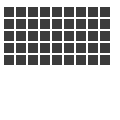

grid
grid(cols, rows, colsize=1, rowsize=1)
The grid() command returns an iteratable object, something that can be traversed in a for-loop (like the range() command for example). The grid() is a more complex, but very powerful command. The first two parameters define the number of columns and rows in the grid. The next two parameters are optional, and set the width and height of one cell in the grid. Each iteration in a for-loop, the offset for the current column and row is returned.
 |
for x, y in grid(7, 5, 12, 12):
rect(x, y, 10, 10) |
tuples of x/y coordinates that can be used in a for-loop